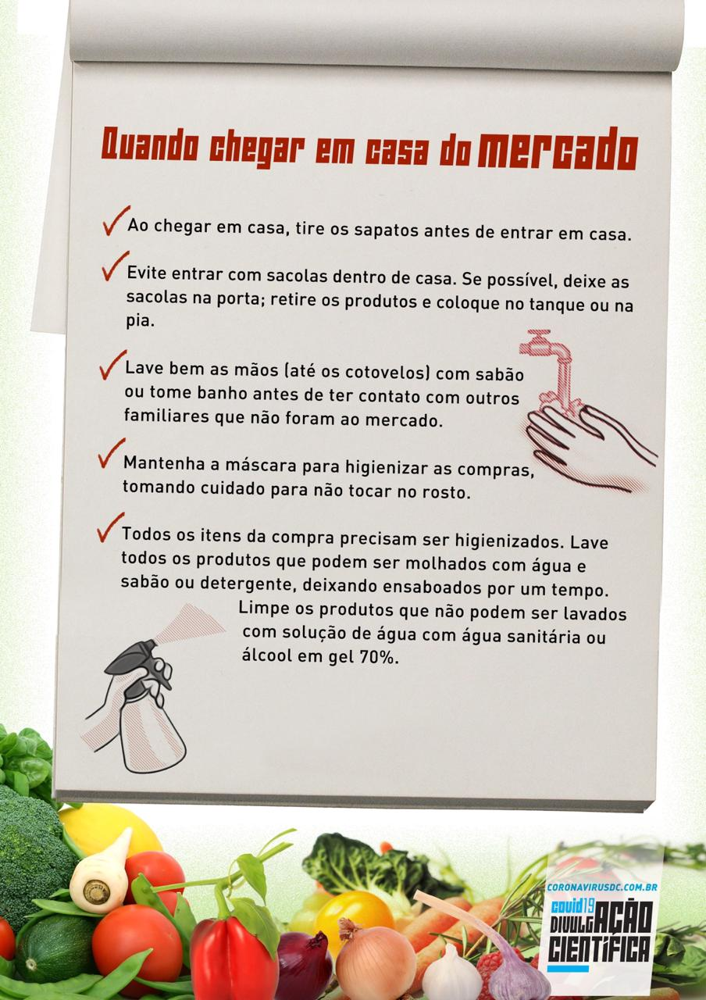

Home
Vacinas
Cadastro para Vacinação
Retomada da Economia
Protocolos
Medidas de Proteção
Informações gerais
Informações científicas

Informativos sobre isolamento domiciliar
Informativos com recomendações específicas
Rotina no isolamento domiciliar